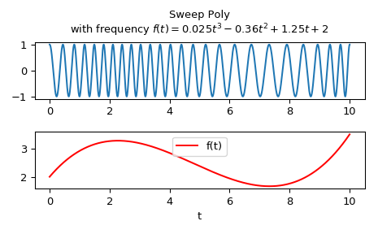

scipy.signal.sweep_poly¶
-
scipy.signal.sweep_poly(t, poly, phi=0)[source]¶ Frequency-swept cosine generator, with a time-dependent frequency.
This function generates a sinusoidal function whose instantaneous frequency varies with time. The frequency at time t is given by the polynomial poly.
Parameters: t : ndarray
Times at which to evaluate the waveform.
poly : 1-D array_like or instance of numpy.poly1d
The desired frequency expressed as a polynomial. If poly is a list or ndarray of length n, then the elements of poly are the coefficients of the polynomial, and the instantaneous frequency is
f(t) = poly[0]*t**(n-1) + poly[1]*t**(n-2) + ... + poly[n-1]If poly is an instance of numpy.poly1d, then the instantaneous frequency is
f(t) = poly(t)phi : float, optional
Phase offset, in degrees, Default: 0.
Returns: sweep_poly : ndarray
A numpy array containing the signal evaluated at t with the requested time-varying frequency. More precisely, the function returns
cos(phase + (pi/180)*phi), where phase is the integral (from 0 to t) of2 * pi * f(t);f(t)is defined above.See also
Notes
New in version 0.8.0.
If poly is a list or ndarray of length n, then the elements of poly are the coefficients of the polynomial, and the instantaneous frequency is:
f(t) = poly[0]*t**(n-1) + poly[1]*t**(n-2) + ... + poly[n-1]If poly is an instance of
numpy.poly1d, then the instantaneous frequency is:f(t) = poly(t)Finally, the output s is:
cos(phase + (pi/180)*phi)where phase is the integral from 0 to t of
2 * pi * f(t),f(t)as defined above.Examples
Compute the waveform with instantaneous frequency:
f(t) = 0.025*t**3 - 0.36*t**2 + 1.25*t + 2
over the interval 0 <= t <= 10.
>>> from scipy.signal import sweep_poly >>> p = np.poly1d([0.025, -0.36, 1.25, 2.0]) >>> t = np.linspace(0, 10, 5001) >>> w = sweep_poly(t, p)
Plot it:
>>> import matplotlib.pyplot as plt >>> plt.subplot(2, 1, 1) >>> plt.plot(t, w) >>> plt.title("Sweep Poly\nwith frequency " + ... "$f(t) = 0.025t^3 - 0.36t^2 + 1.25t + 2$") >>> plt.subplot(2, 1, 2) >>> plt.plot(t, p(t), 'r', label='f(t)') >>> plt.legend() >>> plt.xlabel('t') >>> plt.tight_layout() >>> plt.show()
